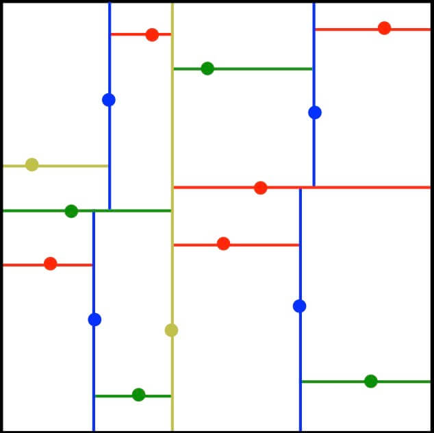

Projects
Here's a compendium of the side-projects I've completed so far. To see what I've done and hear what I've learned, either continue scrolling or click one of the links below to go straight to a particular project.
Nutstradamus: The Game

For the capstone project in CS 61B at UC Berkeley, my friend Jason Diwa and I built a tile-based arcade game in Java. While we were provided with the tile-rendering engine, every other aspect of the design and implementation was left completely up to us.

In the game, you play as Nutstradamus, a prophetic squirrel who seeks enlightenment and eternal salvation through collecting acorns. However, you are challenged by dogs who follow you in hot pursuit. If the dogs catch you before you have collected every acorn, you lose the game.

The world map is pseudo-randomly generated, and the user inputs a seed to the game that is used in world-generation so the same world can be revisited. The first step in our algorithm is to randomly partition the entire field into rectangular sections like so:
Then, we randomly choose a portion of these partitions to be "rooms," and create random hallways until everything is connected. Once the map is created, the location of the squirrel, dogs, and acorns are randomly chosen.
The dogs continually chase you throughout the game, and are powered by the A* algorithm. We were able to repurpose code from another project in CS 61B that involved implementing A*. We elected the Manhattan distance hueristic for use in A*, as the player only has options to move up, down, left, and right.
Additional feautures that we added include save/load capabilities to return to the same game state later, the ability to toggle sight of the paths the dogs will take to get to you, and a heads-up display that shows information about each tile when the cursor is hovered over it.
While I had already been exposed to Git before this project, physically working off of the same code with another person was a new challenge. Working on separate branches and resolving merge conflicts was essentially new to me, and I learned lots about Git and general best practices in version control.
The design and implementation problems we faced were extremely challenging. Besides the fact that we spent over 40 hours on this project, we rewrote or scrapped hundreds of lines of code and had to battle the inevitably increasing complexity of our project. While each individual problem can be challenging on its own, we had to also think about finding a solution that elegantly fit in with the rest of the project. Given our time constrictions (we had just over two weeks to complete the project), I am very proud of our final product, and know that my skills in designing software have greatly improved.
Skills & tools: Managing complexity, Java, Git, UI design
Spam or Ham
In this project for DATA 100 at UC Berkeley, I created a logistic regression classifier that can distinguish spam (junk or commercial or bulk) emails from ham (non-spam) emails. The project was originally done in Python through a Jupyter Notebook. Scikit-learn was utilized for machine learning, Natural Language Toolkit (NLTK) for analyzing text data, and Seaborn/Matplotlib for visualizations.
This project involved exploratory data analysis to better understand the data, followed by feature selection and engineering for the model. The main features used in my model were distinctive words from results of NLTK analysis.
I used various visuals, ranging from the common (bar graph, density plots), to the unqiue (heat maps, ROC curve) to convey my findings and display model efficacy. The ROC curve is shown below, and the ROC area-under-curve (AUC) score is 0.9987. This means that 99.87% of the time, the model is more likely to classify a spam email as ham than a ham email as spam. In this context, favoring false positives over false negatives is desired.

My final model had a training accuracy of 98.7%, 5-fold cross validation accuracy of 97.8%, and a test accuracy of 97.4%. I thought these results were quite good, especially given that the project was limited to logistic regression.
As the project is still in use for Data 100, the code and Jupyter Notebook cannot be shared publicly. However, I have transcibed essential information and all of the relevant visuals to LaTeX form, which can be seen here.
Skills & tools: Logistic regression, Python, Natural Language Toolkit (NLTK)
NBA Player PPG Prediction
I developed a machine learning regression model alongside three other Berkeley Data Science Society members to predict NBA players’ average points per game (PPG) scored. We deployed hyperparameter tuning and cross validation techniques.
This project involved a deeper dive into machine learning model creation and optimization than any of my previous work. To see the Jupyter notebook for this project, click here.
Skills & tools: Python, feature engineering, hyperparameter tuning
PGA Tour EDA
I'm an avid golfer, so I was thrilled to combine my passions for golf and computing when I saw the plethora of data available from the PGA Tour.
I performed exploratory data analysis (EDA) on PGA Tour data from 2017 to determine what aspects of a player's game have the largest impact on player season earnings. Take a look at the Jupyter notebook here.
Skills & tools: Python, data processing, feature creation, data visualization
PDF Merger/Splitter

Unlike most of my other projects, this one began as the result of a real world problem that I faced (well... at least sort of). The top hit on Google for PDF mergers required a monthly fee to be used. While I'm sure there are free versions out there, I took the opportunity to create my own PDF merger/splitter from scratch.
I used the PyPDF2 library to assist with the actual splitting/merging of PDF documents, then created a GUI for easier use using Tkinter. In fact, I still use this program whenever I need to merge or split PDFs. Take a look at the code for the project here.
Skills & tools: Python, object-oriented programming, GUIs
Titanic Survival Prediction

For my first data science project, I elected to work off of the Titanic dataset from the highly popular Kaggle competition. I employed binary classification and rudimentary machine learning techniques to create a model to predict survival of passengers on the RMS Titanic.
For this project, my main goal was to gain a solid grasp of the data sciece lifecycle, from data cleanup, to model creation and interpretation. Click here to see the Jupyter notebook for this project.
Skills & tools: Python, data cleaning, machine learning
Foundation Web Template

Everyone starts somewhere, and I more or less started here. This project involved using Zurb's Foundation framework for responsive design to create a generic website template. This was my first major coding project, and introduced me to concepts like web design, UI/UX, and project workflow. The template incorporates responsive design, and is optimized for mobile.
These skills came in handy when building this very website, which also relies on Foundation for responsive design. If you'd like to see the code for the template, click here. For the source code for this website, click here.
Skills & tools: HTML5, CSS, javascript, Foundation